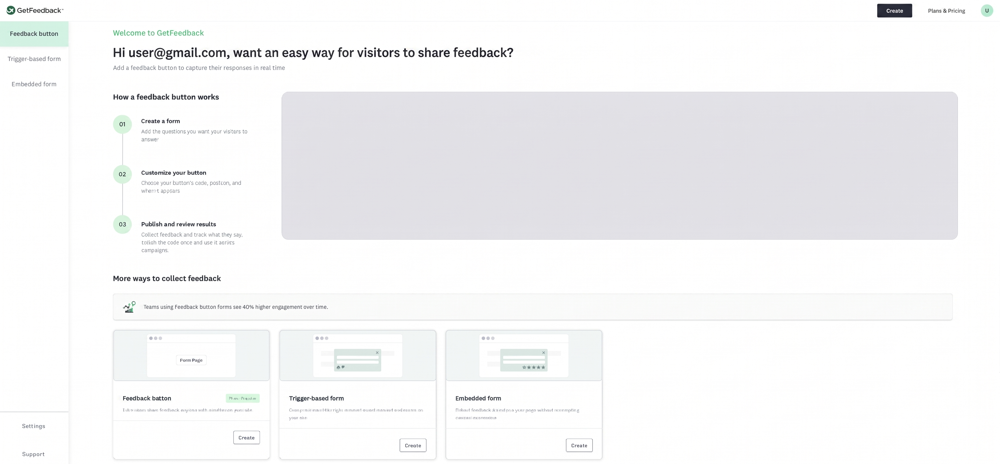

Getting Started with GetFeedback Digital
Welcome to the new GetFeedback Digital experience. Our redesigned dashboard makes it easier than ever to manage your feedback channels, analyze user insights, and customize your data collection. This guide provides an overview of the interface and the core feedback types available to you.
Dashboard Overview
The Home page serves as your mission control for the product. From here you will be able to create and manage new Buttons and Forms.

Global Navigation (Left Sidebar)
- Feedback Button: Manage your "Always-on" passive feedback forms.
- Trigger-based Form: Access your behavior-triggered forms.
- Embedded Form: View and edit your in-page forms.
- Support: Click here to contact our support team for technical assistance.LINK TO BE ADDED HERE
- Settings: Access your account settings, profile information, and security preferences.
Header Actions
- Create Button: Your starting point for building any new feedback form.
- Plans & Pricing: View your current subscription details or explore upgrade options to unlock advanced features.
Managing Your Surveys
When you select one of the three main tabs (Feedback Button, Targeted Survey, or Embedded Survey), you will see a list of all existing forms of that type.
- Status Toggle: Quickly turn a survey on or off without deleting it.
- Analyse Results: This button takes you directly to the Analyse Results page, where you can deep-dive into your collected responses, view trends, and export data.
- Search & Filters: Use the search bar or the "More Filters" button to locate specific forms by name or date.
Feedback Types: A Brief Overview
GetFeedback Digital offers three primary ways to capture the voice of your customer:
1. Feedback Button (Passive Forms)
A floating button that sits quietly on the edge of your website. It allows visitors to share their thoughts at any time, providing you with a constant stream of "always-on" feedback without interrupting the user journey. Learn how to set up a Feedback Button →
2. Trigger-based Form (Campaigns)
These are proactive forms triggered by specific user behaviors—such as time spent on a page, scroll depth, or exit intent. They are designed to ask the right questions at exactly the right moment to capture high-context insights. Learn how to create a Trigger-based Form →
3. Embedded Form (In-Page)
Unlike pop-ups or floating buttons, these forms are built directly into the content of your page (e.g., at the end of a help article). They collect responses seamlessly without disrupting the visual experience of your site. Learn how to set up an Embedded Form →
Next Steps
Ready to start listening? Click the Create button at the top of your dashboard to launch your first feedback channel. Or explore our specific guides: